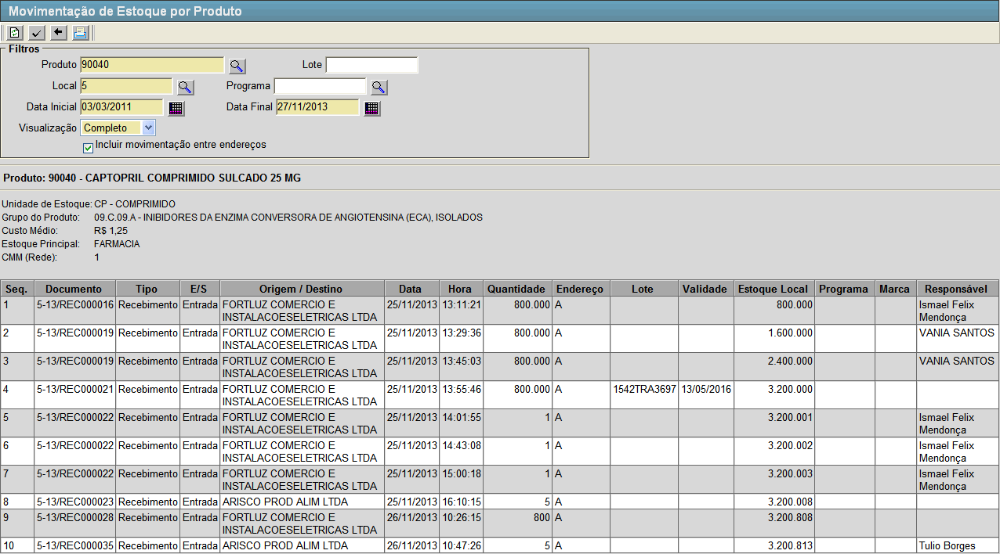
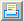

Para verificar as movimentações realizadas no estoque, siga os passos a seguir:
1º Passo: preencha os campos da tela. Lembre-se que campos amarelos são de preenchimento obrigatório.
- Produto. Entre aqui com o produto alvo da consulta. Clique no botão
 [Pesquisar] para selecioná-lo por meio de uma listagem contendo todos os produtos cadastrados.
[Pesquisar] para selecioná-lo por meio de uma listagem contendo todos os produtos cadastrados.
- Lote. Entre aqui com o lote do produto em questão.
- Local. Entre aqui com um local para a consulta. Clique no botão [Pesquisar] para selecioná-lo por meio de uma listagem contendo todos os locais cadastrados.
- Programa. Entre aqui com um programa relacionado ao produto. Clique no botão [Pesquisar] para selecioná-lo por meio de uma listagem contendo todos os programas cadastrados.
- Data Inicial. Entre aqui com uma data de início para a consulta. Clique no botão
 [Data] para selecioná-la por meio de um calendário.
[Data] para selecioná-la por meio de um calendário. - Data Final. Entre aqui com uma data de fim para a consulta. Clique no botão [Data] para selecioná-la por meio de um calendário.
- Visualização. Selecione aqui entre as opções: "Completo" e "Simplificado".
|
Campos de data possuem alguns
atalhos importantes, são eles:
Data
atual: digite o sinal . (ponto) e
pressione a tecla "Enter" para que o sistema retorne a data atual;
Data
do mês corrente: digite o dia do mês e
pressione a tecla "Enter" para que o sistema retorne o mês e ano
correntes;
Dias
a contar da data atual: digite o sinal + (mais) ou - (menos)
antes do número de dias em referência à data atual e pressione
a
tecla "Enter" para a data anterior ou posterior à data atual. |
2º Passo: após preencher os filtros desejados clique no botão  para gerar a consulta.
para gerar a consulta. Os resultados irão aparecer na tela conforme imagem abaixo.

3º Passo (Opcional): clique no botão [Relatório].
Este botão abrirá o relatório "MOVIMENTAÇÃO DE ESTOQUE POR PRODUTO", que contém os resultados da pesquisa.